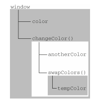
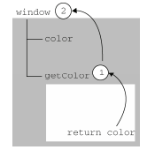

参考《JavaScript高级程序设计》
执行环境及作用域
全局执行环境是最外围的执行环境。在Web浏览器中，全局执行环境被认为是window对象，因此所有全局变量和函数都是作为window对象的属性和方法创建的。
每个函数都有自己的执行环境。
ECMAScript的执行流机制，当执行流进入一个函数时，函数的环境就会被推入一个环境栈中。当函数执行后，栈将其环境弹出，把控制权返回给之前的执行环境。
当代码在一个环境中执行时，会创建变量对象的一个作用域链。
作用域链的用途，是保证对执行环境有权访问的所有变量和函数进行有序访问。
作用域链的前端，始终是当前执行的代码所在环境的变量对象。如果这个环境是函数，则将其活动对象作为变量对象。活动对象在最开始时只包含一个变量，即arguments对象（这个对象在全局环境中是不存在的）。作用域链中的下一个变量对象来自包含（外部）环境，而再下一个变量对象则来自下一个包含环境。这样，一直延续到全局执行环境；全局执行环境的变量对象始终都是作用域链中的最后一个对象。
其实就是从目标变量开始向上找它的直系祖先，一直找到祖宗全局执行环境。
标识符解析是沿着作用域链一级一级地搜索标识符的过程。搜索过程始终从作用域链的前端开始，然后逐级地向后回溯，直至找到标识符为止（如果找不到标识符，通常会导致错误发生）。
套用书上的例子：
很简单的例子，大家一看就知道答案。但是上面这段代码的作用域链，需要我们去思考理解一波。
函数
changeColor()的作用域链包含两个对象：它自己的变量对象(其中定义着arguments对象)和全局环境的变量对象。
之所以能在函数内部去访问全局变量color就是因为能在这个作用域链中找到它。
这里的作用域链方向大概是这样的：changeColor()——>color——>window
另一个例子：
作用域链示图：

首先，得明确一点，内部环境可以通过作用域链访问所有的外部环境，但是外部环境不能访问内部环境中的任何变量和函数。
这些环境之间的联系是线性的、有次序的。
每个环境都可以向上搜索作用域链，以查询变量和函数名；但任何环境都不能通过向下搜索作用域链而进入另一个执行环境。
try-catch语句的catch块和with语句能够延长作用域链。
这两个语句都会在作用域链的前端添加一个变量对象。
- with语句，将指定的对象添加到作用域链中。
- catch语句，会创建一个新的变量对象，其中包含的是被抛出的错误对象的声明。
- IE8及之前版本的JavaScript实现中，存在一个与标准不一致的地方，即在catch语句中捕获的错误对象会被添加到执行环境的变量对象，而不是catch语句的变量对象中。换句话说，即使是在catch块的外部也可以访问到错误对象。IE9修复了这个问题。
例子：
上述代码中，with语句接收的是
location对象，因此其变量对象中就包含了location对象的所有属性和方法，而这个变量对象被添加到了作用域链的前端。当在with语句中引用变量href(实际引用的是location.href)时，可以在当前执行环境的变量对象(location)中找到。当引用变量qs时，引用的则是在buildUrl()中定义的qs变量，而该变量位于函数环境的变量对象中。至于with语句内部，则定义了一个名为url的变量，因而url就成了函数执行环境的一部分，所以可以作为函数的值被返回。
没有块级作用域
JavaScript没有块级作用域。
使用for语句时需要注意：
对于有块级作用域的语言来说，for语句初始化变量的表达式所定义的变量，只会存在于循环的环境中。而对于JavaScript来说，由for语句创建的变量
i即使在for循环执行结束后，也依旧会存在于循环外部的执行环境中。
如果给一个变量赋值前没有声明(即没有使用var或let或const声明)，那么默认该变量是全局变量(但不建议这么做，可能导致错误)
查询标识符
当在某个环境中为了读取或写入而引用一个标识符时，必须通过搜索来确定该标识符实际代表什么。
搜索过程从作用域链前端开始，向上逐级查询与给定名字匹配的标识符。如果在局部环境中找到了该标识符，搜索过程停止，变量就绪；如果在局部环境中没有找到该变量名，则继续沿作用域链向上搜索。搜索过程将一直追溯到全局环境的变量对象。如果在全局环境中也没有找到这个标识符，则意味着该变量尚未声明。
例：
调用本例中的函数getColor()时会引用变量color。为了确定变量color的值，将开始一个两步的搜索过程。首先，搜索getColor()的变量对象，查找其中是否包含一个名为color的标识符。在没有找到的情况下，搜索继续到下一个变量对象(全局环境的变量对象)，然后在那里找到了名为color的标识符。因为搜索到了定义这个变量的变量对象，搜索过程宣告结束。如图：

如果局部环境中存在着同名标识符，就不会使用位于父环境中的标识符
例：
上面代码中。函数
getColor()内部再次声明了一个color变量，由于与全局变量color同名，调用函数时，首先在getColor()作用域内(或者说环境内)去搜索有没有color变量的定义，结果很显然，找到了，所以就不会继续沿着作用域链向上搜索了。
如果想访问全局变量color只有通过window.color的方式。